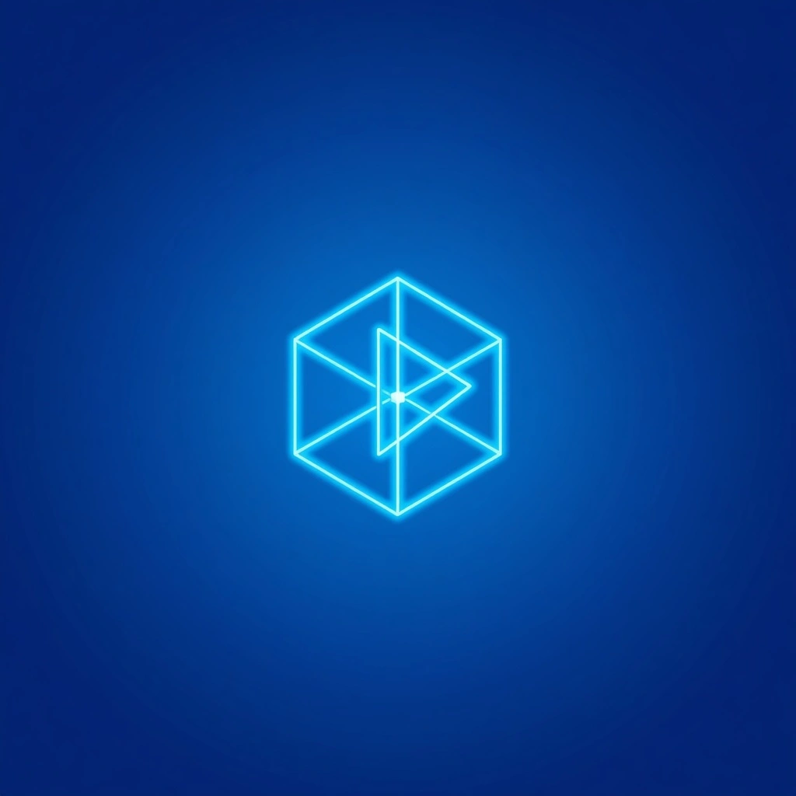
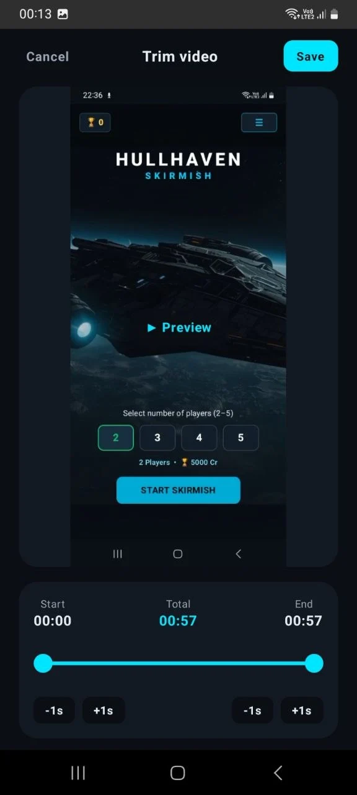
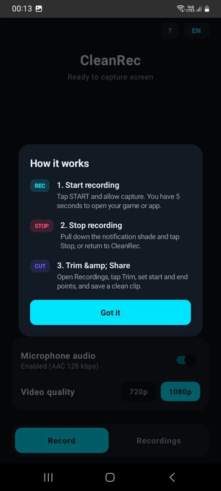
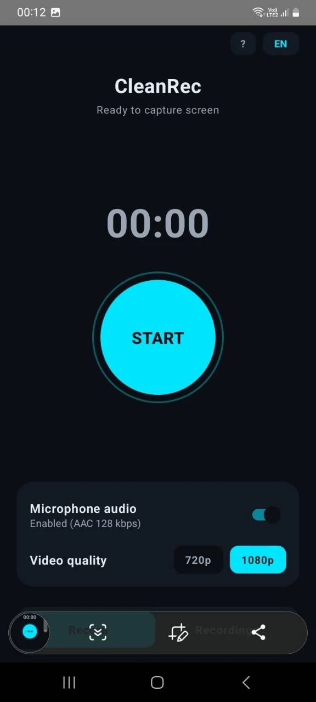
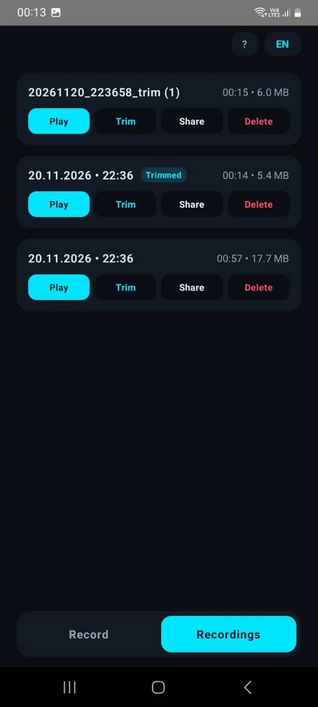

One-tap capture
A big Start/Stop button and a live timer. The 5-second countdown lets you switch to the app you want to record.

FREE · NO ADS · ANDROID
Record your screen.
No limits. No tracking.
A lightweight screen and audio recorder. Free, ad-free, watermark-free — and it never collects your data.
A big Start/Stop button and a live timer. The 5-second countdown lets you switch to the app you want to record.
Record microphone audio (AAC) and choose between 720p or 1080p with screen-proportional scaling.
Trim videos instantly using native tools without re-encoding. Live preview and ±1s fine-tuning.
100% offline. No registration, no analytics. Your recordings stay in Movies/CleanRec.
A look at the interface during development:




CleanRec v1.0 is in preparation for Google Play. Contact us for early access or if you have feedback.
support@lockrion.com